Cube Escape Collection
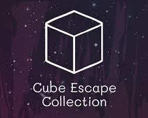
In this classic point-and-click adventure anthology you follow the path of Dale Vandermeer, a homicide detective,
as he investigates the death of a woman and finds himself drawn into the mysterious world of Rusty Lake.
Samsara Room
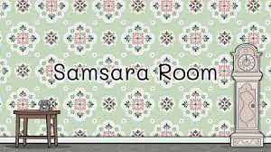
You wake up in a strange room you have never seen before. There are a lot of random objects and furniture but there
is one thing missing…a door to get out. Find a way to leave the room by interacting with the objects in this unique
point & click adventure. Nothing is what it seems in this strange surreal place, only by thinking out of the box you
will solve the riddle and escape.
The Withe Door

Robert Hill wakes up in a Mental Health facility and suffers from severe memory loss. Follow the facility’s
strict daily routine, explore his dreams and help him recall his memories. The White Door is a new point-and-click
adventure developed by the creators of the Cube Escape & Rusty Lake series.
Cube Escape:Paradox
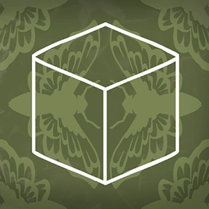
Paradox is a combined Rusty Lake game & short film! Both follow the story
of a detective who finds himself trapped in two different universes and needs to escape.
Rusty Lake Paradise
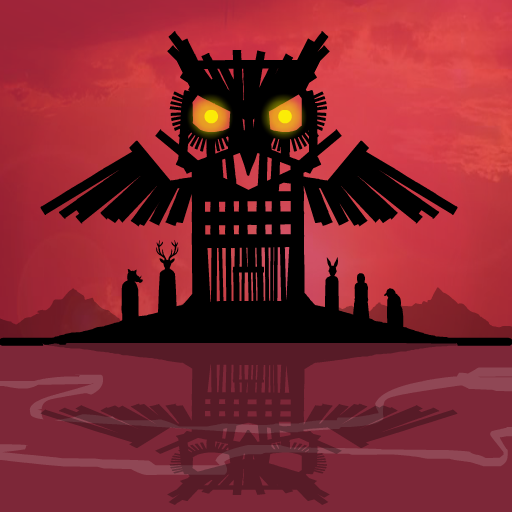
Jakob, the oldest son of the Eilander family, is returning to Paradise island after his mother passed away.
Since her mysterious deth, the island seems to be cursed by the ten plagues. Find the mother's hidden memories
and partake in strange family rituals in order to stop the plagues.
Cube Escape: The Cave
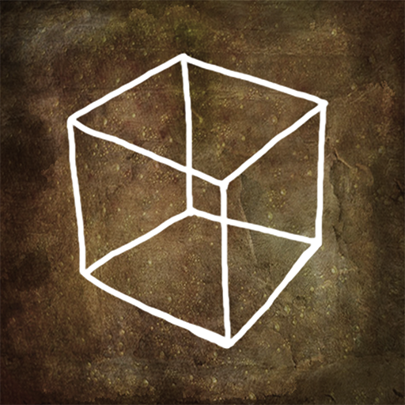
An old man is about to enter a mysterious Cave. A familiar guest needs your help before you descend
deeper and deeper into Rusty Lake. Click on the arrows to navigate inside the cube. Interact with objects
by clicking. Select found items in your inventory and click somewhere on screen to use them.
Rusty Lake: Roots
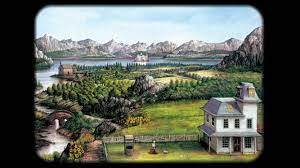
James Vanderboom's life drastically changes when he plants a special seed in the garden of the
house he has inherited. Expand your bloodline by unlocking portraits in the tree of life. A trip to this
undiscovered part in the Rusty Lake universe will cost only $ 2,99 / € 2,99 and is now available on: iOS,
Android and Desktop
Cube Escape: Theatre
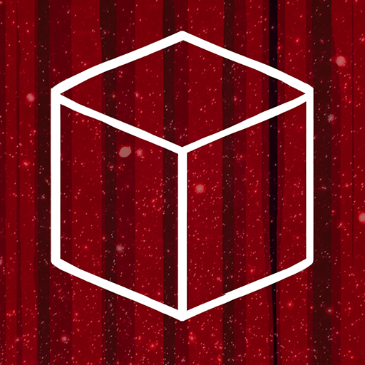
Welcome to the theatre of your mind. Tonight we have an engaging program, featuring a familiar cast.
Fulfill all 6 plays in order to continue your journey. Click on the arrows to navigate inside the cube.
Interact with objects by tapping. Select found items in your inventory and click somewhere on screen to use them.
Cube Escape: Birthday
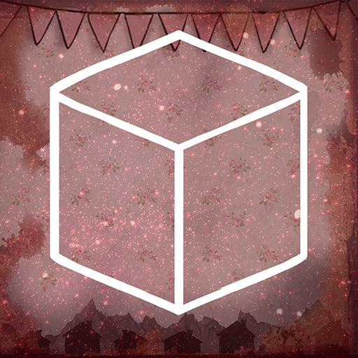
Welcome to your 9th birthday, winter 1939. There is cake, music and a mysterious present. However,
the mood changes quickly when an unexpected guest arrives at your party. Click on the arrows to navigate
inside the cube. Interact with objects by tapping. Select found items in your inventory and click somewhere
on screen to use them.
Rusty Lake Hotel
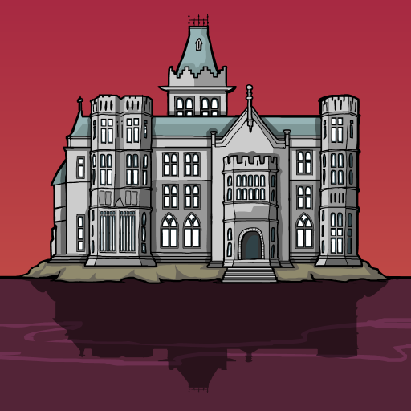
Welcome our guests to the Rusty Lake Hotel and make sure they will have a pleasant stay.
There will be 5 dinners this week. Make sure every dinner is worth dying for! A single, one way
trip to this undiscovered part in the Rusty Lake universe will cost only $ 1,99 / € 1,99 and is now
available on: iOS, Android and Desktop.
Cube Escape: The Mill
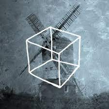
Welcome to the Rusty Lake Mill, the residence of Mr. Crow. A familiar guest will arrive soon
and it is your task to get that mysterious machine running. Click on the arrows to navigate inside the cube.
Interact with objects by clicking. Select found items in your inventory and click somewhere on screen to use them.
Cube Escape: Case 23
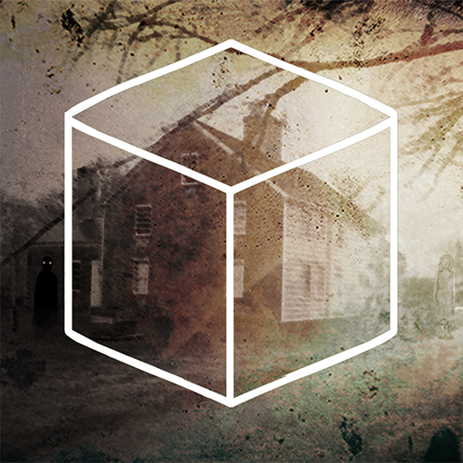
In Cube Escape: Case 23 you need to investigate the mysterious death of a woman. Collect all the evidence
and discover the gateway to Rusty Lake. Click on the arrows to navigate inside the cube. Interact with objects
by clicking. Select found items in your inventory and click somewhere on screen to use them.
Cube Escape: Harvey's Box
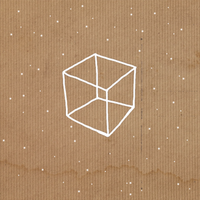
It's 1969 and Harvey is trapped inside a box moving to Rusty Lake...Find out what's
going on and help Harvey escape by solving numerous of puzzles.
Cube Escape: Arles

You're trapped inside your bedroom in Arles. It feels like you're surrounded by art.
Explore the room and start completing the pictures, search for colors and gather your painting
materials. Click on the arrows to navigate inside the cube. Interact with objects by clicking.
Select found items in your inventory and click somewhere on screen to use them.
Cube Escape: The Lake
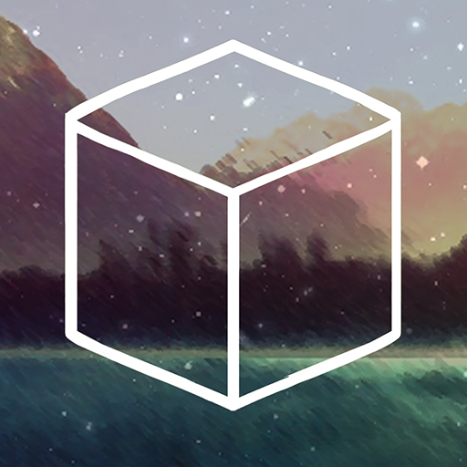
You've found an abandoned cabin on a small Island at Rusty Lake. The only thing you can
find is some fishing gear, a knive and a crow bar. Start exploring and let's fish!
Perhaps you can change your fate... Click on the arrows to navigate inside the cabin.
Cube Escape: Seasons
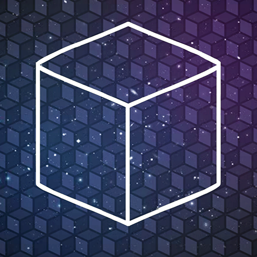
Cube Escape is one of the most mysterious room escape game you will ever play. Try
to unfold the story and mysteries behind the cubes. You will start with your
first memory, spring 1964. It brings you to a calm and friendly room.